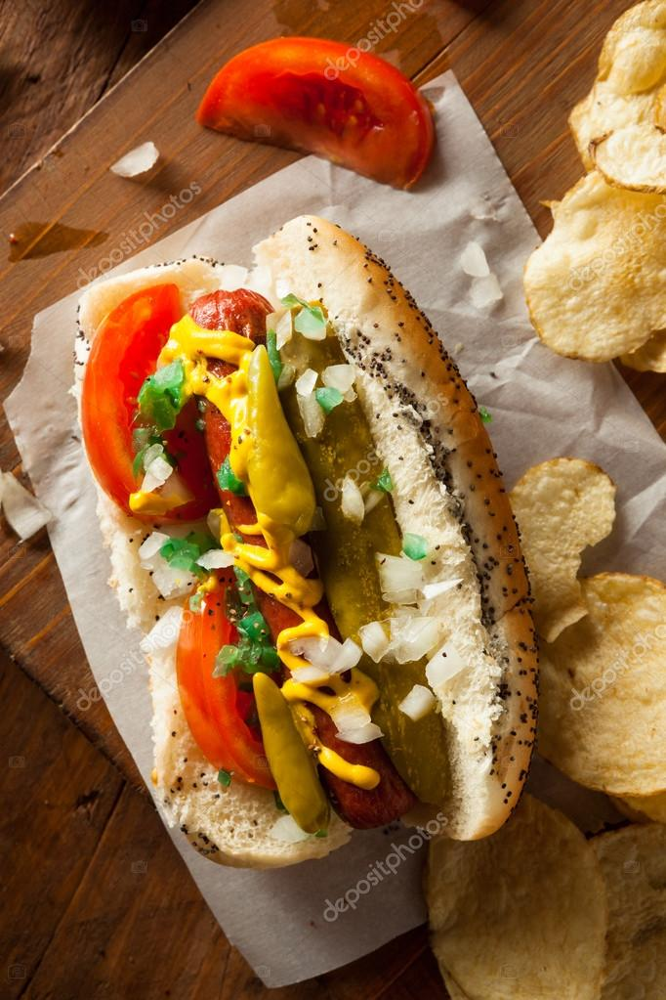

Chicago Style Hotdogs

This recipe is a family favorite!
What began as hot dog thursdays in my household overtime became a creative onset of
how many toppings can we fit on one hot dog! Who would have thought, tomatos, onions,
pickles, mustard, relish, and a meat tube, all on one bun
I wouldn't necessarily call this an easy recipe but I would call it a delicious one!
So get your cooking gloves and utensils ready and let's get cooking!
Ingredients
- Hot dog buns (we prefer to make them from scratch in our household)
- Hot dogs (we use the all beef kirkland specials)
- White onions
- Beef tomatoes
- Relish
- Yellow mustard
Steps
- First things first, let's get those hot dogs in some water! Find a decent sized pot and fill it with enough
water. I'm not going to tell you how much is enough because it's not rocket science. Then put that pot on
the stove top, throw the hot dogs in it and crank the heat.
- Now as our water is boiling going to prepare all of our vegetables! Start by dicing your onions.
Then we will slice our tomato's as if they are going on a sandwich, but then slice them
down the middle because they're going in a hot dog bun! Last step in slicing our vegetables
is making some pickle spears. If you're unsure how to spear a pickle, google it.
- If at this point the hot dogs are not quite done yet because you're a vegetable cutting ninja, then
feel free to start assembling your bun. We'll do this by first putting the relish on the bottom and the
diced white onions ontop the relish. We will put the tomato half slices along one side of the hot dog bun
and then we'll wait to put the pickle and mustard on till the hot dog is in the bun
- Now that your hot dog is done boiling, get a fork and pull one of them out! You will then shake the excess
water off it and place it into your ready to go hot dog bun. Then you will slide the pickle wedge beside
the hot dog and then apply the mustard in a zig zag fashion.
- And wuh-la! You are now free to enjoy your chicago style hot dog!
Bon Apple Tea!